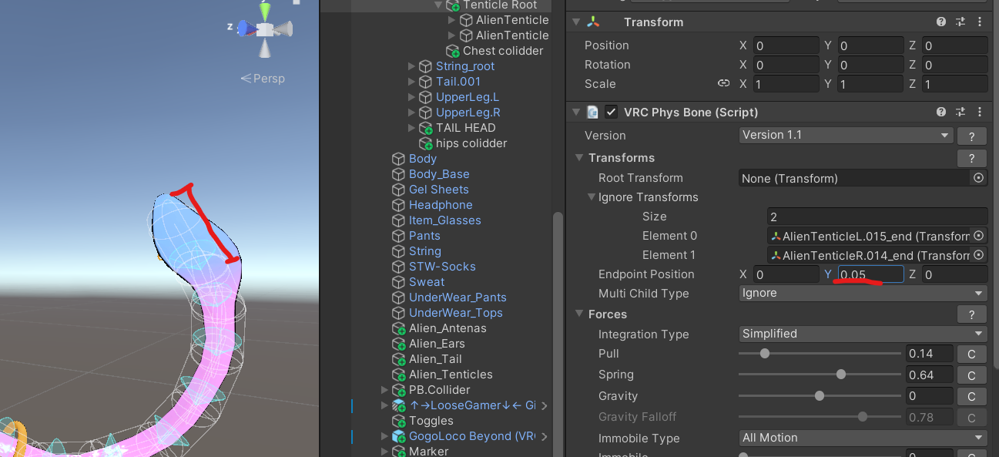
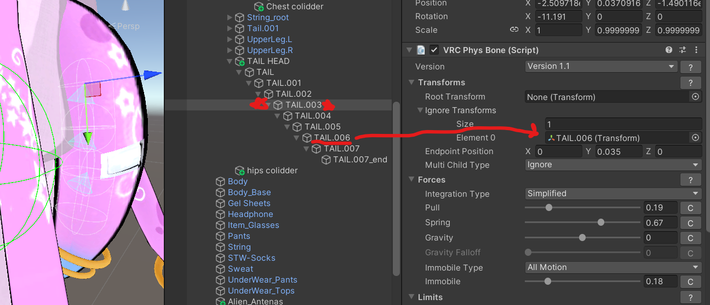
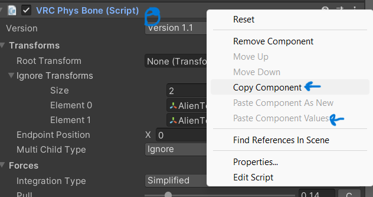
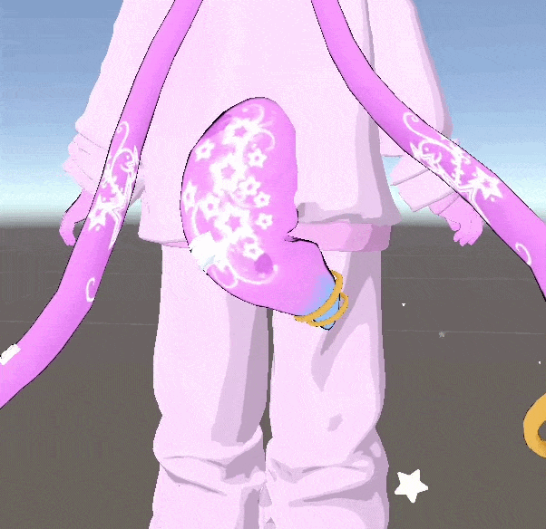
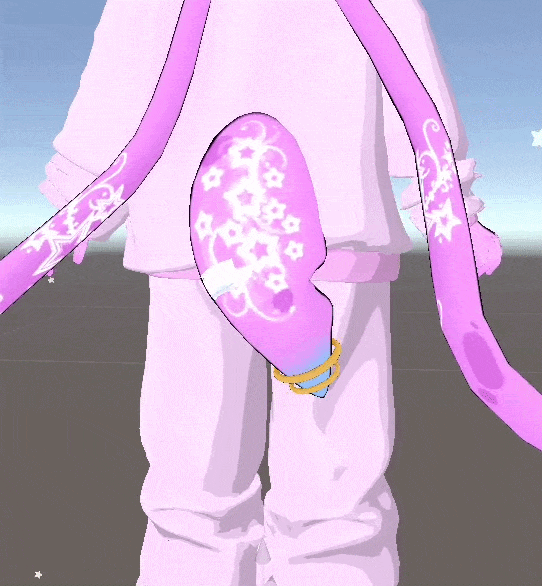

Use Ignore Transform and Endpoint Position to save physbone transforms

Open up the entire bone strand in the hierarchy, and drag the last bone onto Ignore Transform
![cropped image of unity editor. Hierarchy on the left contains Shoulder R,
Alien tenticle root. Inside the root bone is alien tenticle L and alien tenticle r. Both bone strands
continue for 16 bones. The last bone of Alien Tenticle L, named Alien tenticle 15 end, is underlined
and has a red arrow pointing to the Ignore transforms section of the left side of the image. on
the left side, the inspector window is there. The window shows the transform component, and the
VRC physbone script component. The physbone component is set to version 1.1, has root Transform
set to none, ignore transforms size set to 2, and has 2 elements in the list. element 0 is alien tenticle
15 end. this emelent is pointed to with the large red arrow leading from alien tenticle 15 end in the
hierarchy on the left. element 1 is alien tenticle 14 end. endpoint position reads x: 0, y: 0.05, and z:
0. multi child type is set to ignore. forces section and beyond are not relavent, but the integration
type is set to simplified. the force values are as follows; pull: 0.14, spring: 0.64, gravity: 0, gravity
falloff: in grey: .78. immoble type is set to all motion. The limits section has limit type set to
angle and the max angle value at 45 degrees. the rotation values are pitch, roll, and yaw. all three
are set to 0](img/physbones1.png)
Do this for every strand in the physbone component, and then add a y position endpoint.
Play with the endpoint value to match the lenght of the end bone we are ignoring.

This way, your physbone has the same amount of physics, but less physbone transforms, because endpoints are not counted as transforms.
This can save alot, especially on hair which usually have many strands of bones.
Alternatively, you can use ignore transform to cut off more than the last bone. This will make the mesh move differently, but sometimes it is necessary to lower the transform count to 64 transforms.

In this image, I moved the physbone component from Tail.001 to Tail.003, and I cut the physbone off at Tail.006
To move the physbone component lower on the strand, I copied the physbone properties of Tail.001, then I created a physbone component on Tail.003, pasted the properties, and then removed the physbone on Tail.001
This method is not practicle when you are using a root bone, but for single strand bones it is another way to reduce physbone components



physics before vs after
They are less wiggly, but not a bad tradeoff for quest.